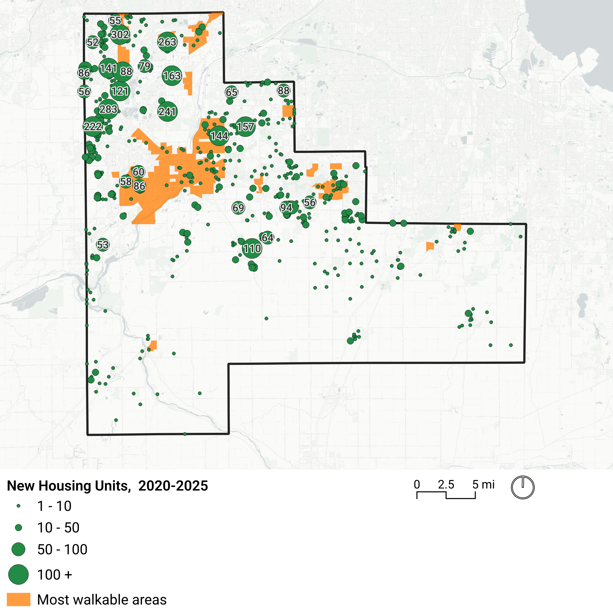

About this Study
This comprehensive, county-wide housing study will provide a data-driven framework to promote housing that meets the needs of Will County communities.

Study goals:
- Evaluate housing and demographics to understand housing need and demand, and set a preliminary production target.
- Identify the most suitable sites for different types of housing based on spatial and socioeconomic criteria.
- Assess local barriers to housing and development feasibility for proforma missing middle housing types.
- Create a strategic action plan, with priority actions and a best practices library.
Study Area
This study includes analysis and findings for Will County overall, as well as observations for six subregions.
Will County's local population is rapidly aging, and trends suggest young talent is moving elsewhere.
The population of people entering the workforce (age 20-34) is decreasing across Will County. In all but the East subregion, this group is projected to make up a smaller share of the population. This age group has a negative net migration rate.
In contrast, the population of people age 65+ is projected to significantly increase across the county.
Will County is home to fewer families with children, and more small households.
Over the past decade, Will County's mix of family types has shifted in ways that imply changes in local housing needs and preferences. For example:
More adults living with parents and roommates suggests younger adults want to live in Will County but can't find and/or afford housing of their own.
More seniors living alone suggests some older residents may be interested in downsizing from a house that is too large for them into something smaller and lower-maintenance.
Fewer families with children suggests a mismatch between the housing and lifestyle available in Will County, and the needs of young families with kids.
These trends span all 6 subregions, with the sharpest decrease in families with children in the Northeast and the more rural East and Southwest regions. As a result, school enrollment has declined by 9% since 2018.
Will County is adding more jobs than workers.
Over the past decade, Will County has added a significant number of new jobs, but has not added new resident workers at the same rate. As a result, a declining share of local jobs are held by local residents.
Will County is primarily a bedroom community, with 68% of residents commuting to work outside of the county.
Will County's housing does not offer many options for smaller households, young professionals, or downsizing seniors.
Most units in Will County are detached single family with 3+ bedrooms. The county offers few smaller units and rentals.
The housing stock offers limited options for young professionals and first-time homebuyers, who also prefer townhouses, condos, and apartments, as well as small (less than 3 bed) single-family homes.
Additionally, most nonfamily households earn less than the median income and may need smaller, lower-cost housing options in the future. This would be especially true for seniors aging in houses that are larger than they need and increasingly difficult and costly to maintain.
Will County has fewer rental units, and is building less multifamily housing than similar suburban counties.
Less than 20% of Will County's housing units are rentals, and most of these are concentrated in the Central region. Young adults and early-career professionals typically prefer rental housing, and there are limited options in Will County. Both Lake and DuPage counties have a higher percentage of rental housing.
In the past 10 years, all three counties have built mostly single-family homes. Will County has built the fewest multifamily units - only 18% of newly built homes in Will County were multifamily, compared with 35% in Lake and DuPage counties.
Homes in Will County are less affordable than they used to be, and prices are out of reach for single-income earners.
Home prices remain affordable to median income households in most subregions, but housing is less affordable than it was 10 years ago.
Prices differ by region. Households in the East, Central, and Southwest subregions would have difficulty affording a home in the Northwest, Northeast, and East Central subregions.
Higher-earning individuals - like a mid-career worker with an income of $112,000 - may be able to afford a home, as can most workers if they are part of a household with multiple wages. However, young professionals, who are more likely to be single and have lower incomes - like an early-career worker with an income of $65,000 - cannot afford home prices in most of the county.
| $369,528 | Median home price (Zillow, November 2025) |
| 6.24% | Mortgage rate (FRED, November 2025) |
| 2.35% | Property tax rate (2025) |
| 0.35% | Homeowners insurance as percentage of home value (treasury.gov estimate, 2025) |
| 30% | Percent of household income spent on housing costs |
| 11.6% | Downpayment assumption |
Nearly all new housing in Will County is in new subdivisions in previously undeveloped areas, with a lack of investment in urban areas.
In the past 5 years, nearly all new homes in Will County have been built in undeveloped rural or agricultural areas. Almost no housing has been added in suburbs, and urban areas have seen a net decrease in the number of housing units.
The most walkable parts of Will County (highlighted in orange on the map) have the highest concentration of amenities like jobs, schools, grocery stores, and healthcare. Most new housing has been added outside of these areas.

Explore the data
Next Steps
Will County CED is hosting focus groups for input into the data analysis and potential strategies during the week of January 26. Following these focus groups, CommunityScale will analyze market demand data and integrate stakeholder feedback to draft a housing action plan.
The draft action plan will provide strategies for housing production, and meeting the housing needs of different populations including seniors, young professionals, and families. The draft will be shared with focus groups for review and feedback later in the spring.